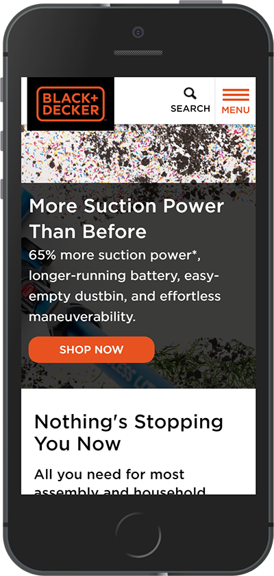

Alignment
BlackandDecker.com
It is difficult to appreciate the impact alignment can have on a website when viewed on a smalol mobile device. In this case everything is just stacked on top of each other. You can see that there is a list left justified, but there is more to alignment than making a list. In this case, it is more useful to navigate to the site on a bigger screen. When you see it in full-screen you will recognize that there is an imaginary line that could run down the middle of your screen. The pictures seem to sprout out from this point. Also, the text beside each picture aligns with the outer margin of the picture just above or below it. Alignment creates order and creates visual connections.